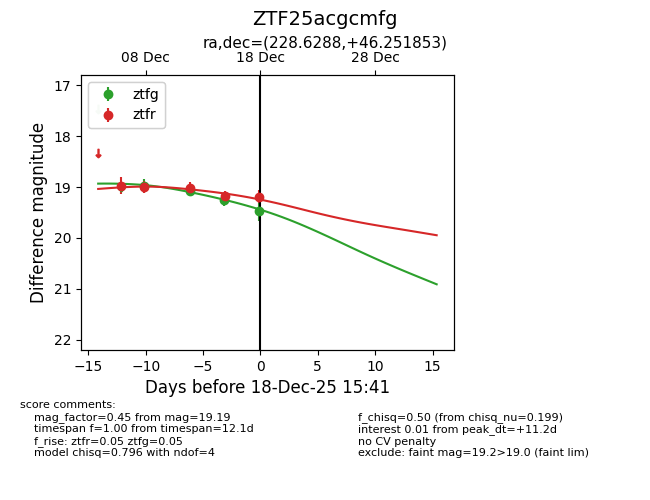
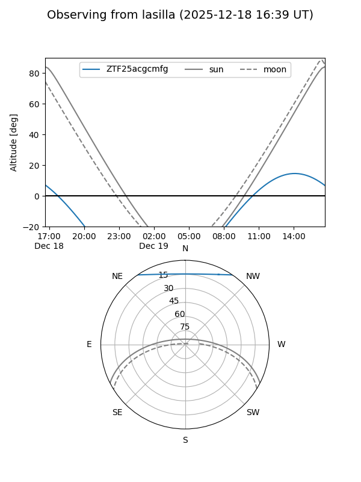
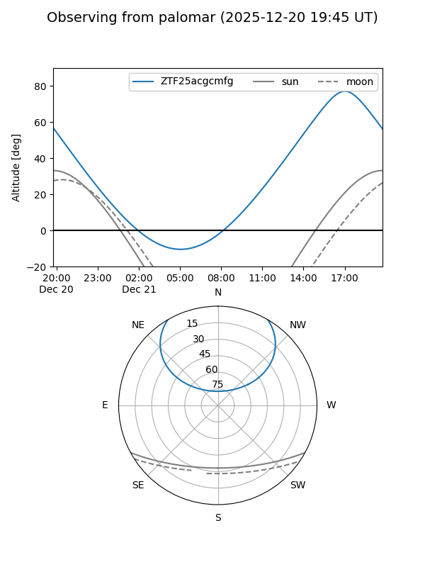
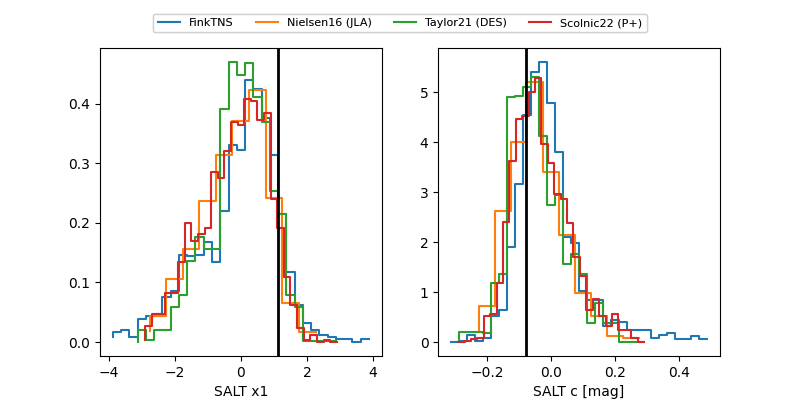

ZTF25acgcmfg
Target ZTF25acgcmfg at 2025-12-21 12:52
Aliases and brokers:
FINK: fink-portal.org/ZTF25acgcmfg
Lasair: lasair-ztf.lsst.ac.uk/objects/ZTF25acgcmfg
ALeRCE: alerce.online/object/ZTF25acgcmfg
alt names
ZTF25acgcmfg (ztf,fink_ztf)
Coordinates:
equatorial (ra, dec) = 228.6288,+46.25185
equatorial (HMS+DMS) = 15:14:30.90,+46:15:06.67
galactic (l, b) = (76.6932,+55.96873)
Flags:
Photometry:
last ztfg=19.63, ztfr=19.19
5 ztfg, 5 ztfr detections
Lightcurve

Visibility


Additional plots
